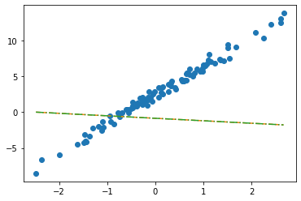

import torch
import pandas as pd
import numpy as np
import matplotlib.pyplot as plt 04wk-1: 딥러닝의 기초 (2)
딥러닝의 기초
회귀분석(2)– SSE와 MSE, step1의 다른버전 (torch.nn.Linear)
강의영상
https://youtube.com/playlist?list=PLQqh36zP38-wezS4h765Rs5mQFoSjrLMk
- 강의영상 재업로드 하였습니다.
review
df = pd.read_csv("https://raw.githubusercontent.com/guebin/DL2022/main/posts/II.%20DNN/2022-09-22-regression.csv")
df| x | y | |
|---|---|---|
| 0 | -2.482113 | -8.542024 |
| 1 | -2.362146 | -6.576713 |
| 2 | -1.997295 | -5.949576 |
| 3 | -1.623936 | -4.479364 |
| 4 | -1.479192 | -4.251570 |
| ... | ... | ... |
| 95 | 2.244400 | 10.325987 |
| 96 | 2.393501 | 12.266493 |
| 97 | 2.605604 | 13.098280 |
| 98 | 2.605658 | 12.546793 |
| 99 | 2.663240 | 13.834002 |
100 rows × 2 columns
x= torch.tensor(df.x,dtype=torch.float32).reshape(100,1)
y= torch.tensor(df.y,dtype=torch.float32).reshape(100,1)
X= torch.tensor([[1]*100,x]).TWhat = torch.tensor([[-5.0],[10.0]],requires_grad=True)
Whattensor([[-5.],
[10.]], requires_grad=True)plt.plot(x,y,'o')
#plt.plot(x,-5+10*x,'--')
plt.plot(x,X@What.data,'--')
ver1: loss = sum of squares error
alpha = 1/1000
What = torch.tensor([[-5.0],[10.0]],requires_grad=True)
for epoc in range(30):
# step1: yhat
yhat = X@What
# step2: loss
loss = torch.sum((y-yhat)**2)
# step3: 미분
loss.backward()
# step4: update
What.data = What.data - alpha * What.grad
What.grad = None # Whattensor([[2.4290],
[4.0144]], requires_grad=True)plt.plot(x,y,'o')
plt.plot(x,X@What.data,'--')
- note: 왜 What = What - alpha*What.grad 는 안되는지?
ver2: loss = mean squared error = MSE
alpha = 1/10
What = torch.tensor([[-5.0],[10.0]],requires_grad=True)
for epoc in range(30):
# step1: yhat
yhat = X@What
# step2: loss
loss = torch.mean((y-yhat)**2)
# step3: 미분
loss.backward()
# step4: update
What.data = What.data - alpha * What.grad
What.grad = None # Whattensor([[2.4290],
[4.0144]], requires_grad=True)step1의 다른버전: torch.nn.Linear()
ver1: bias=True
torch.manual_seed(43052)
net = torch.nn.Linear(in_features=1, out_features=1, bias=True) plt.plot(x,y,'o')
plt.plot(x,net(x).data,'--')- net에서 \(\hat{w}_0, \hat{w}_1\) 의 값은?
net.weight # w1 Parameter containing:
tensor([[-0.3467]], requires_grad=True)net.bias # w0 Parameter containing:
tensor([-0.8470], requires_grad=True)_yhat = -0.8470 + -0.3467*x plt.plot(x,y,'o')
plt.plot(x, _yhat,'--')
plt.plot(x,net(x).data,'-.')
- 수식표현: \(\hat{y}_i = \hat{w}_0 + \hat{w}_1 x_i = \hat{b} + \hat{w}x_i = -0.8470 + -0.3467 x_i\) for all \(i=1,2,\dots,100\).
ver2
- 입력이 x가 아닌 X를 넣고 싶다면? (보통 잘 안하긴 해요, 왜? bias=False로 주는게 귀찮거든요) - X는 바이어스가 고려된 상황
net(X) ## 그대로 쓰면 당연히 에러RuntimeError: mat1 and mat2 shapes cannot be multiplied (100x2 and 1x1)torch.manual_seed(43052)
net = torch.nn.Linear(in_features=2, out_features=1, bias=False) net.weightParameter containing:
tensor([[-0.2451, -0.5989]], requires_grad=True)net.biasplt.plot(x,y,'o')
plt.plot(x,net(X).data, '--')
plt.plot(x,X@torch.tensor([[-0.2451],[-0.5989]]), '-.')- 수식표현: \(\hat{\bf y} = {\bf X} {\bf \hat W} = \begin{bmatrix} 1 & x_1 \\ 1 & x_2 \\ \dots & \dots \\ 1 & x_{100} \end{bmatrix} \begin{bmatrix} -0.2451 \\ -0.5989 \end{bmatrix}\)
잘못된사용1
_x = x.reshape(-1)_xtensor([-2.4821, -2.3621, -1.9973, -1.6239, -1.4792, -1.4635, -1.4509, -1.4435,
-1.3722, -1.3079, -1.1904, -1.1092, -1.1054, -1.0875, -0.9469, -0.9319,
-0.8643, -0.7858, -0.7549, -0.7421, -0.6948, -0.6103, -0.5830, -0.5621,
-0.5506, -0.5058, -0.4806, -0.4738, -0.4710, -0.4676, -0.3874, -0.3719,
-0.3688, -0.3159, -0.2775, -0.2772, -0.2734, -0.2721, -0.2668, -0.2155,
-0.2000, -0.1816, -0.1708, -0.1565, -0.1448, -0.1361, -0.1057, -0.0603,
-0.0559, -0.0214, 0.0655, 0.0684, 0.1195, 0.1420, 0.1521, 0.1568,
0.2646, 0.2656, 0.3157, 0.3220, 0.3461, 0.3984, 0.4190, 0.5443,
0.5579, 0.5913, 0.6148, 0.6469, 0.6469, 0.6523, 0.6674, 0.7059,
0.7141, 0.7822, 0.8154, 0.8668, 0.9291, 0.9804, 0.9853, 0.9941,
1.0376, 1.0393, 1.0697, 1.1024, 1.1126, 1.1532, 1.2289, 1.3403,
1.3494, 1.4279, 1.4994, 1.5031, 1.5437, 1.6789, 2.0832, 2.2444,
2.3935, 2.6056, 2.6057, 2.6632])torch.manual_seed(43052)
net = torch.nn.Linear(in_features=1,out_features=1) net(_x)RuntimeError: mat1 and mat2 shapes cannot be multiplied (1x100 and 1x1)잘못된사용2
torch.manual_seed(43052)
net = torch.nn.Linear(in_features=2,out_features=1) # bias=False를 깜빡..net.weightParameter containing:
tensor([[-0.2451, -0.5989]], requires_grad=True)net.biasParameter containing:
tensor([0.2549], requires_grad=True)plt.plot(x,y,'o')
plt.plot(x,net(X).data,'--')
plt.plot(x,X@torch.tensor([[-0.2451],[-0.5989]])+0.2549,'-.')
- 수식표현: \(\hat{\bf y} = {\bf X} {\bf \hat W} + \hat{b}= \begin{bmatrix} 1 & x_1 \\ 1 & x_2 \\ \dots & \dots \\ 1 & x_{100} \end{bmatrix} \begin{bmatrix} -0.2451 \\ -0.5989 \end{bmatrix} + 0.2549\)
숙제
(1) 자신의 학번을 seed로 설정하고 표준정규분포에서 5개의 난수를 생성하고 순서대로 정렬한 뒤 이를 x로 저장하라. (아래코드참고)
torch.manual_seed(202043052)
x,_ = torch.randn(5).sort()(2) 아래와 같이 torch.nn.Linear()를 이용하여 적당한 네트워크를 생성하고 “최초의 직선” \(\hat{y}_i\)가 아래와 같이 구해지도록 net.weight 혹은 net.bias의 값을 수정하라.
\[ \hat{y}_i = 2.5 x_i - 7, \quad i=1,2,3,4,5 \]
단, \(x_1,x_2,\dots,x_5\)는 x의 원소이다.
note: 공부를 위해서 bias를 넣은 버전과 넣지 않는 버전 모두 계산해 보세요. (숙제제출은 한 방법으로만 구현해도 무방)
(풀이)
torch.manual_seed(202043052)
x,_ = torch.randn(5).sort()
x = x.reshape(-1,1)
X = torch.concat([torch.ones(5).reshape(-1,1),x],axis=1)x,X(tensor([[-2.9777],
[-0.2220],
[-0.1181],
[ 0.1084],
[ 1.7688]]),
tensor([[ 1.0000, -2.9777],
[ 1.0000, -0.2220],
[ 1.0000, -0.1181],
[ 1.0000, 0.1084],
[ 1.0000, 1.7688]]))(ver1) bias를 넣음
net1=torch.nn.Linear(in_features=1,out_features=1,bias=True)
net1.weight.data, net1.bias.data(tensor([[0.0092]]), tensor([0.1899]))net1.weight.data = torch.tensor([[2.5]])
net1.bias.data = torch.tensor([-7.0])
net1.weight.data, net1.bias.data(tensor([[2.5000]]), tensor([-7.]))net1(x), 2.5*x-7(tensor([[-14.4443],
[ -7.5551],
[ -7.2952],
[ -6.7290],
[ -2.5781]], grad_fn=<AddmmBackward0>),
tensor([[-14.4443],
[ -7.5551],
[ -7.2952],
[ -6.7290],
[ -2.5781]]))(ver2) bias를 넣지 않음
net2=torch.nn.Linear(in_features=2,out_features=1,bias=False)
net2.weight.data, net2.bias(tensor([[-0.6152, -0.6372]]), None)net2.weight.data = torch.tensor([[-7.0, 2.5]])
net2.weight.datatensor([[-7.0000, 2.5000]])net2(X), 2.5*x-7(tensor([[-14.4443],
[ -7.5551],
[ -7.2952],
[ -6.7290],
[ -2.5781]], grad_fn=<MmBackward0>),
tensor([[-14.4443],
[ -7.5551],
[ -7.2952],
[ -6.7290],
[ -2.5781]]))